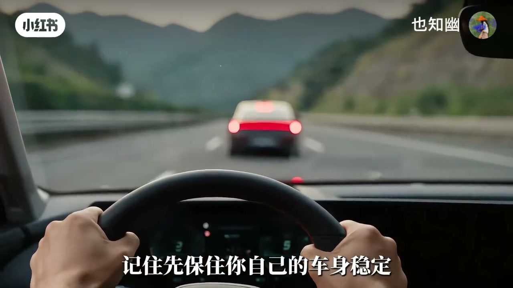
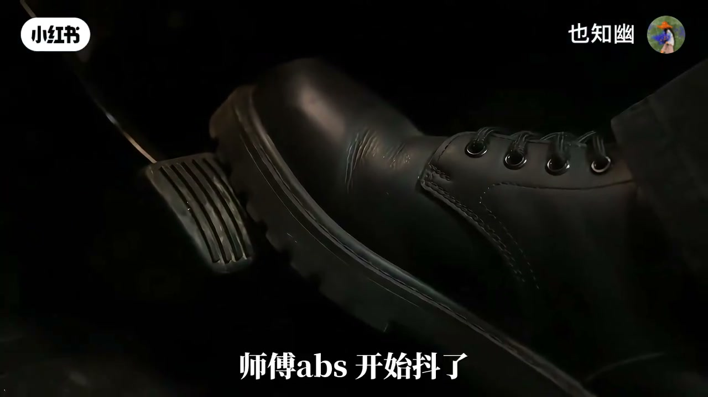
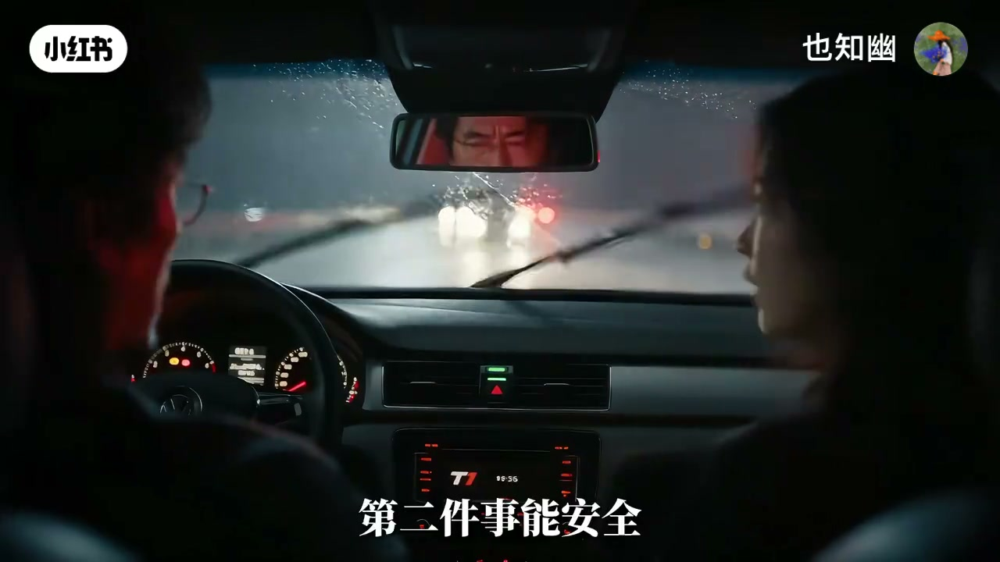

内容要点
同一账号用对话打掉「看见人就猛打方向」的本能：高速横向突变可能甩进旁车道，躲开一个人却造出更多车险。口令是「让速不让道」——先保车身稳定，全力制动（ABS 抖也不松），方向尽量直线把碰撞速度压到最低；宁可停车，别先把自己甩进别人车道。若仍撞上：双闪、能安全则靠边、先保自己、报警急救、保存行车记录仪、别吵责任。教学演示，实车请遵守当地法规与交警指令。
知识结构
先稳车身降速；乱打方向风险更大。
全力刹车+直线＝让速不让道。
双闪靠边报警；保存记录仪；勿吵。
改掉第一反应；五字口令。
高速见人：先稳方向全力制动「让速」，不要为躲人把整车甩进旁车道「让道」。
00:00-00:49为什么不能直接往旁边躲
学员喊打方向，师傅制止：先踩刹车降速。躲开前面的人，不一定躲得开旁边的车；旁车道危险你反而看不见。车速越高，横向变化越突然，失控碰撞风险越大。核心是先把速度降下来并尽量保持车道。00:25。

00:49-01:40全力制动保持直线
来不及也别慌：稳住方向盘。一把方向下去车可能比人先失控；高速不是停车场，旁车来不及躲——躲开一个危险可能制造三个。
不是「硬刹发泄」，是全力制动保持方向：ABS 开始抖别松，继续踩；方向尽量直线。车速可不断降，别为躲目标把车甩出去。能稳定制动就先把碰撞速度降到最低。01:15。

01:40-02:28撞上以后先做什么
先别下车乱跑。第一开双闪；第二能安全靠边就靠边，车还能动则移到不影响交通处；先保证自己不被后车撞；马上报警等交警急救。
别跟行人理论吵责任；保护现场，行车记录仪保存好——前方画面、刹车过程、车辆方向都重要。没必要别乱动现场。01:50。

02:28-02:48改掉第一反应：让速不让道
以后再遇：先把「乱打方向」改掉——先稳方向，再全力制动，同时能做就提醒前后车，继续判断道路。真撞上则保障人员安全、报警、存记录仪、等交警。
真正避险不是谁走位最漂亮，而是谁把风险控制到最小。五字：让速不让道。02:35。
完整转录（125段）
以下文本由 Whisper medium 模型自动转录，可能存在少量识别误差，已尽可能修正。
师傅 前面有人
看到了
快打方向躲开啊
别动方向
人就在前面
先踩刹车
可是撞上去怎么办
先把车速降下来
旁边车道要是没车呢
你躲开了前面的人
但你不一定躲得开旁边的车
那我到底怎么做
记住
先保住你自己的车身稳定
准备紧急撤离
师傅 我还是有点想不通
想不通什么
人就在车前面
为什么不能直接往旁边躲
因为你不知道旁边有什么
可前面已经确定有危险了
旁边的危险你反而看不见
高速上车太高
车辆横向变化越突然
失控和碰撞风险就越大
所以让速不是不刹车
对 恰恰相反
是先把速度降下来
然后尽量保持车道
这才是核心
师傅 真的来不及了
别慌
马上就撞到了
方向盘给我稳住
你这一把方向下去
车可能比人先失控
最多就是压线啊
高速不是停车场
旁边车道如果突然有车呢
他根本来不及躲
对 你躲开了一个危险
可能又给自己制造三个危险
那就只能硬杀
不是硬杀
是全力制动保持方向
师傅 ABS开始抖了
别松
还继续踩
对
现在你只管把刹车踩住
那方向呢
尽量保持直线
这就是你说的让速不让到
对 车速可以不断降
但别为了躲一个目标
把整辆车甩出去
可万一还是撞上呢
能做到稳定制动
就先把碰撞速度降到最低
也就是说
宁可让车停下来
也别先把自己甩进别人的车道
撞上了
师傅怎么办
先别下车乱跑
人怎么样
先确认现场情况
第一件事 打开双闪
已经打开了
第二件事
能安全靠边就靠边
要是车还能动呢
在确保安全的情况下
把车移到不影响交通的位置
人要不要马上过去
先保证你自己
不会被后面的车撞
那报警呢
马上报警
等待交警和急救
师傅
要不要先跟那个人理论
别吵
可他突然出现在高速上啊
责任怎么认
不是现在靠吵出来的
那现在干什么
先保护现场
行车记录仪呢
把视频保存好
前面的画面 刹车过程
车辆方向都很重要
所以我刚才没乱打方向
这个动作本身就很关键
人要不要先救
需要救援就马上报警
在确保自身安全的情况下
进行合理帮助
那现场能随便挪东西吗
没有必要就别乱动
等交警到场处理
师傅
我以后再遇到这种情况
先把第一反应改掉
别乱打方向
对
先稳方向
再全力制动
同时提醒前后车辆
能做就做
然后继续判断道路
对
如果真的撞到了呢
先保障人员安全
报警
保存行车记录仪
然后等交警处理
对
原来真正的避险
不是谁走得最漂亮
而是谁能把风险
控制在最小
所以记住这五个字
哪五个字
让速不让到